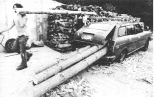

PHOTOS BY ERI DARNELL, CHESLYE LARSON AND MOTHER'S STAFF
Four years ago, owner-builders Eric Darnell and Cheslye Larson carted 54 pine logs culled from a dense grove of 35 year-old trees up their mountain in an aging Subaru station wagon. These natural poles became the load supporting framework for the couple's 3,000-square-foot home and workshop in South Strafford, Vermont.